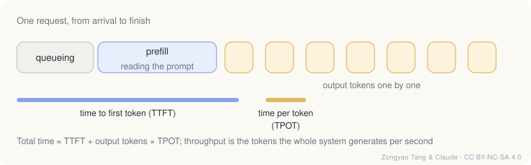
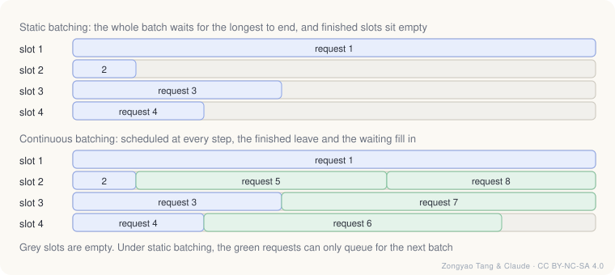

The thread: first be clear about what an inference service is after, which is three metrics that pull against each other → the core means of raising throughput is continuous batching → but as 9.1 said, prefill and decode have different characters, and mixing them in one batch causes problems → so scheduling becomes finding a balance between throughput and latency → finally, two ways of "computing less". This unit is interesting to read against the scheduling of training (part 8): both arrange work onto GPUs, but training is after total volume, while inference also has to mind each user's wait.
Part 9 · Inference systems (optional)9.3 Inference engines: batching, memory and scheduling
Translated by AI (Anthropic's Claude) from the Chinese edition. The Chinese original is the reference.
This unit answersWhy can the same model differ several times in throughput on a different inference engine?
Follows 9.1 (the arithmetic of inference): that unit covered how one request is computed; this one covers how to arrange many requests arriving at once.
- Three metrics: throughput, latency of the first token, latency per token
- Continuous batching: requests enter as they arrive and leave when done
- Prefill and decode mixed together drag each other down
- Scheduling is trading off between throughput and latency
- Computing less: prefix caching and speculative decoding
Explanation
1Three metrics: throughput, latency of the first token, latency per token
An inference service cannot look only at "how many tokens are generated per second". What users feel is two kinds of wait: how long from sending a request to seeing the first word (time to first token), and how fast each word comes after that (time per token). What the provider cares about is how many requests one GPU can serve at once while meeting both latency requirements.
Three metrics.
- Throughput. Tokens generated per second by the whole system, or requests completed per second. It decides cost: how many users the same hardware serves.
- Time to first token (TTFT). From a request arriving to its first output token being produced. It includes queueing time and the time of prefill (9.1). The longer the prompt, the longer the prefill.
- Time per output token (TPOT). The interval between two adjacent output tokens, that is, the time of each decode step. It decides how fast the text "flows out".
The total time of a request ≈ time to first token + number of output tokens × time per token.

Which stretch each of the two latencies measures Different applications value different things.
- Chat: the first token has to be quick (the user is waiting for a response), and per-token speed only needs to beat human reading speed.
- Code completion: both have to be very fast, or they break your train of thought.
- Offline batch processing (summarising a million documents): only throughput matters, and how long a single request waits does not.
Why they pull against each other. As 9.1 said, decode is bandwidth-limited, so putting more requests in a batch means one read of the weights serves more people, and throughput rises almost proportionally. But the larger the batch, the longer each step takes, and each user's per-token latency gets worse with it; newly arriving requests may also have to wait longer. Here throughput and latency trade off against each other.
So the real goal is usually stated like this: set upper limits on latency (say no more than 1 second to the first token, no more than 50 milliseconds per token), and make throughput as high as possible while the great majority of requests meet them. Some papers call "the part of throughput that meets the latency requirements" goodput.
Compared with training. Training has only one metric: throughput (0.2). All the samples are in hand, and the order and batches can be arranged at will. Inference requests arrive one after another, all of different lengths, with no way of knowing in advance how much they will generate, and behind each request is a person waiting. So inference systems have a whole extra layer that training systems do not: scheduling. Everything in the rest of this unit is about it.
An analogyLike a restaurant: the owner looks at how many tables turned over in an evening (throughput); the guests care how long after sitting down the first dish arrives, and how long between dishes after that. Chase only table turnover by saving up all the dishes to cook together, and every guest grows impatient.
So an inference system's optimisation goal is constrained: maximise throughput while latency stays within limits. Many designs reach opposite conclusions in different situations precisely because their latency requirements differ.
- 9.1 explained why batching raises throughput. The problem is that batching generation tasks is much harder than batching training.
2Continuous batching: requests enter as they arrive and leave when done
Traditional batching waits for a batch of requests to be gathered, starting together and ending together. Generation tasks are all of different lengths, and a short request that has finished still has to wait with the long ones. Continuous batching shrinks the granularity of scheduling from "one request" to "one step": after each token is generated, it checks once, moves finished requests out, and adds newly arrived ones in.
The waste of static batching. Form 8 requests into a batch and start generating. One of them needs only 10 tokens, another needs 1000.
- The short request is done at step 10, but the batch waits until the longest one ends. For the 990 steps after that, its slot sits empty (or computes useless padding).
- Meanwhile, newly arrived requests can only queue, waiting for the whole batch to end before they can start.
The batch's effective size keeps shrinking over time, and the time to first token for new requests is long as well. It fails on both counts.

The same four slots, two kinds of scheduling (illustrative) Continuous batching (also called iteration-level scheduling). The key observation is that each decode step is the same operation for all requests (each computes one new token), and there is no reason steps must be tied together. So scheduling can be done once per step:
- After this step ends, which requests have generated an end token or reached the length limit: return their results, remove them from the batch, and free their KV cache.
- Are there new requests in the waiting queue, and does memory have room for them: if so, add them.
- Do the next step with this new set of requests.
The Orca paper was the first to set this approach out systematically. Today's inference engines (vLLM, TGI, SGLang and others) all work this way.
How new requests "cut in". A newly added request first has to do prefill (processing its whole prompt), while the old requests in the batch are doing decode (each computing one token). The most direct way is to put them in the same forward pass: each old request contributes 1 position, the new request contributes all the positions of its prompt. This brings the problem covered in the next card.
It places demands on memory management. Requests come and go, and each request's KV cache keeps growing as it generates, with no way of knowing in advance how large it will get. Reserving memory for each request at the maximum length wastes most of it; not reserving means being able to extend it at any moment. The PagedAttention of 9.1 was designed for exactly this: cut the KV cache into fixed-size blocks, and allocate only as much as is used. Continuous batching and paged memory management go together.
How much concurrency one GPU can hold. The ceiling is usually set by the KV cache (4.1, 9.1): total memory minus the model weights, divided by the average KV cache size per request. Once this ceiling is reached, new requests can only queue, and time to first token starts to rise. This is the signal that "it is time to add machines".
An analogyLike the difference between a loop bus that never stops running and a tour coach: the coach waits until everyone is there before it leaves, and everyone gets off together at the end; on the loop bus, at every stop some get on and some get off, and the bus is always full.
So the batch on the GPU always stays high, and new requests do not have to wait for the previous batch to end. It is the first reason modern inference engines have high throughput, and the precondition for 9.1's "batching raises arithmetic intensity" to be really put to use.
Builds on Three metrics: throughput, latency of the first token, latency per tokenBatching: read the weights once, serve a batch of requestsPagedAttention: managing the KV cache the way an operating system manages memoryFive ideas come back in every layerUsed later in Prefill and decode mixed together drag each other down- The previous card said a new request's prefill can go in the same step as the old requests' decode. Doing so has a side effect.
3Prefill and decode mixed together drag each other down
One prefill processes hundreds or thousands of positions, a large, compute-limited block of computation; one decode step computes only one position per request, and is quick in itself. Put a long prefill and a batch of decodes in the same forward pass, and that step's time is decided by the prefill. Every user currently generating has to wait for this newly arrived request to process its prompt before getting their next token.
The differences between the two phases (9.1).
prefill decode Processes at once All positions of the prompt (hundreds to tens of thousands) 1 position per request Computation Large matrix times large matrix Matrix times vector (matrix times small matrix once batched) Bottleneck Compute Memory bandwidth Metric it affects Time to first token Time per token How the interference happens. Suppose a batch has 30 requests in decode, 20 milliseconds per step. Then a new request arrives with a 4000-token prompt. Merge its prefill into the next step: this step has to process 30 + 4000 positions, which may take 300 milliseconds. Those 30 users wait 300 milliseconds for this one token, and the output visibly stutters. The more often requests arrive and the longer the prompts, the more of these stutters.
Conversely, if prefill is made to wait to protect decode, new requests' time to first token becomes very long.
Remedy one: chunked prefill. Sarathi-Serve's approach: instead of doing all 4000 positions at once, do only one chunk of them per step (say 512), executed together with the decode requests. Each step's workload has a ceiling (a "token budget"), so each step's time is under control. The new request's prefill is completed spread over seven or eight steps, and in each step the decode requests wait only a little longer.
This works mathematically because the positions of a prefill have only one kind of relationship, "later ones depend on earlier ones" (the causal mask of 1.4): compute the first 512, store their K and V in the cache, then compute the next 512, and the result is the same as computing it all at once.
The chunk size is a knob: smaller means less interference with decode, but prefill drags on longer and the total overhead is somewhat larger; larger, the opposite.
Remedy two: disaggregated deployment. DistServe's approach: use two groups of GPUs, one doing only prefill, the other only decode. A request first has its prompt processed on a prefill machine, then the resulting KV cache is sent to a decode machine to continue generating.
- The two phases do not interfere at all.
- The two groups of machines can each be configured and scheduled for their own bottleneck: the prefill side optimised for compute, with smaller batches to protect time to first token; the decode side with large batches to raise throughput.
- The cost is sending the KV cache between machines (9.1 worked out its size, which can be hundreds of MB to several GB), which needs a fast enough network; and the ratio of the two groups has to match the actual load.
This is an old problem from 0.1 in a new setting. 4.1 said the same operator "is waiting for different things" in training and inference. Here it goes further: the two phases of the same request are waiting for different things. Force what is waiting on compute together with what is waiting for bandwidth, and neither is served well. First tell what each is waiting for, then decide how to arrange them.
An analogyLike a checkout lane: the people ahead are each buying one bottle of water, a few seconds each; suddenly someone arrives pushing a trolley piled full. Everyone behind with their bottle of water is stuck behind them.
So continuous batching cannot "admit everyone who comes". There are two main remedies: cut a long prefill into small chunks and do only one chunk per step; or simply use different GPUs for prefill and decode.
Builds on Continuous batching: requests enter as they arrive and leave when donePrefill is limited by compute, decode by bandwidthThe causal mask: training processes a whole text in parallel, generation goes word by word"Slow" on the pipeline comes in only four kinds: waiting for data, on compute, for orders, for the other GPUsUsed later in Scheduling is trading off between throughput and latency- The previous two cards are really part of the scheduling problem. Here it is laid out in full.
4Scheduling is trading off between throughput and latency
At every step an inference engine has to make several decisions: how many requests go in this step, when new requests are let in, who waits first when memory runs short. Making the batch large and letting requests wait a bit to fill batches gives high throughput but poor latency; the reverse gives good latency and low throughput. There is no strategy best for every situation, only the best for a given latency target.
The knobs in the scheduler's hands.
- Maximum concurrency (the batch ceiling). The larger, the higher the throughput, the worse the per-token latency, and the more KV cache taken.
- Admission of new requests. Let them in as soon as they come, or wait a moment? Will letting them in make those in the batch stutter (previous card)?
- The token budget per step. How many positions this step processes in total, and how many of them go to prefill.
- When memory runs short. The KV cache is full: make new requests queue, or pause some request that is generating and free its cache (recomputing it later, or restoring it from elsewhere)?
- Order. First come, first served is simplest. But a request that will generate 5000 tokens at the front makes many short requests behind it wait a long time. Some systems try predicting output length and doing the short ones first.
A typical curve. Gradually raise the rate at which requests arrive, and plot how latency changes:
- At low load: latency is low and steady, and the GPU is not fully fed.
- As load rises: throughput rises with it, and latency slowly gets worse. This stretch is the most efficient working range.
- Approaching capacity: queueing starts, and time to first token rises sharply.
- Beyond capacity: the queue grows longer and longer, and latency grows without limit.
"This system's capacity" means the request rate at which latency only just still meets the requirements. Different latency requirements correspond to different points on the curve.
Why look at the tail. A good average latency does not mean a good user experience: a few requests that met stutters or long queues do not show up in the average. 0.2 said "averages deceive". Inference services usually look at the 90th or 99th percentile of latency: what ninety-nine percent of requests stay within. The prefill interference of the previous card mainly hurts the tail.
Load tests have to be realistic. Running a fixed batch with fixed-length inputs over and over measures the engine's peak capability, which may be far from how it behaves in production. Real load is: requests arriving at random, sometimes in bunches; a wide distribution of prompt and output lengths; some carrying very long shared prefixes (next card).
Compared with part 8. Both are scheduling, with different objective functions:
Scheduling of a training cluster (8.2) Scheduling of an inference engine What is scheduled Jobs (hours to weeks) Each step of requests (tens of milliseconds) Goal Utilisation, fairness Throughput under latency constraints Gang requirement A job's GPUs must be in place at once None, requests are independent Cost of preemption Losing progress since the last checkpoint Losing or moving the KV cache Inference services themselves run on clusters too: many replicas of the engine, with a layer in front distributing requests among them, and adding or removing replicas according to load. That layer's problems (which replica to send to, when to scale up) are yet another layer of scheduling.
An analogyLike scheduling a lift: run as soon as each person arrives, and everyone waits least, but the lift often runs empty; wait until it is full, and capacity is highest, but the first in have to wait a long time. In an office building, the morning rush and late at night call for completely different strategies.
So to judge an inference system, look at how high a request rate it can sustain under given latency requirements, not at its peak throughput at some fixed batch. Load tests too should use request arrival patterns close to the real thing.
Builds on Prefill and decode mixed together drag each other downThe KV cache is the bulk of inference memoryGPU utilisation measures "busy or not", not "busy doing something worthwhile"Used later in Computing less: prefix caching and speculative decoding- Finally, two optimisations of a different kind: not arranging the same work better, but making there be less work to do.
5Computing less: prefix caching and speculative decoding
Two ways that rely not on scheduling but on directly reducing computation. Prefix caching: many requests begin with the same content (the same system prompt, the same document), and the KV cache of this stretch can be computed once and shared by all of them, saving repeated prefill. Speculative decoding: a small, fast model first guesses the next few tokens, then the large model verifies them all at once, and correct guesses are used directly, turning several serial decode steps into one.
Prefix caching.
The basis. The causal mask of 1.4 guarantees that a position's K and V depend only on it and what comes before it. If two requests have exactly the same first 2000 tokens, the K and V of these 2000 positions are exactly the same at every layer too.
The method. Keep the KV cache of prefixes already computed, noting the token sequence it corresponds to. When a new request arrives, find the longest common prefix between it and the existing caches, reuse that stretch directly, and do prefill only for the different part after it.
When it works. Common repeated prefixes: the system prompt every request carries; in multi-turn conversations, the whole history of the conversation so far; many questions about the same long document; batch tasks that carry the same set of examples. In these situations most of prefill's computation can be saved, and time to first token drops clearly.
The cost. The cache takes memory, and you have to decide which to keep and which to evict. The paged management of 9.1 makes "several requests sharing the same stretch of cache" natural: their page tables point to the same physical blocks. SGLang organises these caches with a prefix tree.
Another level of "keep computed results at hand and use them again and again" from 0.1: the KV cache is reuse within one request, the prefix cache is reuse across requests.
Speculative decoding.
The basis. Decode is slow because it has to go one token at a time, serially (1.4). But the large model verifying a string of tokens can be done in parallel: feed these few tokens in at once, and compute, as in prefill, "what I would have chosen myself" at each position simultaneously. As 4.1 explained, in single-user decode compute sits idle, and the bottleneck is reading the weights. Verifying 5 positions with one read of the weights takes hardly more time than computing 1 position.
The method.
- A much smaller "draft" model quickly generates the next k tokens serially (say 5).
- The large model, in one forward pass, computes its own predictions for these k positions in parallel.
- Compare from the start: the first tokens on which the draft and the large model agree are all accepted; at the first position where they disagree, the large model's result is used, and the rest are discarded.
- Repeat.
Designed properly, the final output has exactly the same distribution as using only the large model; it is just a different way of reaching the same result.
When it works. When the draft guesses well: where there are many "obvious" continuations, such as fixed idioms in code, or the second half of common phrases. If on average 3 tokens are accepted each time, the large model's forward passes are cut to about a third. When the draft often guesses wrong, not a single forward pass of the large model is saved, and the draft model runs for nothing.
In high-concurrency services. Its benefit is discounted. Speculative decoding exploits "compute sits idle during decode". But batching (9.1) already exploits this idle compute in another way. With a very large batch, close to being compute-limited, having each request verify several more positions means competing with other requests for compute. So it suits situations with low concurrency where the speed of a single request matters.
What they share. Neither changes the model, nor (when designed correctly) the output; they only exploit regularities in the content of requests. They are independent of quantisation (9.2) and of scheduling (the earlier cards), and can be stacked. Following the principle of 11.1, before stacking them ask what each is tackling: prefix caching reduces prefill's compute, speculative decoding reduces decode's serial steps, quantisation reduces the bytes read at each step.
An analogyPrefix caching is like a teacher marking a hundred answers to the same question: the question only needs reading once. Speculative decoding is like a senior editor working with an intern: the intern writes a draft first, the editor glances over it, passes what is right straight away, and rewrites it from the first place that is wrong.
So both methods exploit "regularities" in the workload: repeated prefixes, easily guessed continuations. When the load has none of these regularities, they are no use, and even add overhead. Before using them, look at what your own requests look like.
Putting it together
An inference service has to mind throughput and two kinds of latency at once. Continuous batching lets requests enter as they arrive, keeping the GPU full all the time. But prefill eats compute while decode eats bandwidth, and when they are mixed, a long prefill makes everyone's next token slower; the remedies are to cut prefill into chunks, or to put the two phases on different GPUs. Prefix caching and speculative decoding directly reduce the computation to be done.
Test yourself
Without looking back at the explanation, say it in your own words.
- What are the three main performance metrics of an inference service? Why can you not optimise for throughput alone?
- How does continuous batching differ from traditional static batching? What problem of generation tasks does it solve?
- Why does putting prefill and decode in the same batch hurt latency? How do chunked prefill and disaggregated deployment each solve it?
- What decisions does an inference engine's scheduler make at every step? Why is there no universally best strategy?
- What part of the computation does each of prefix caching and speculative decoding save? Under what conditions do they work?